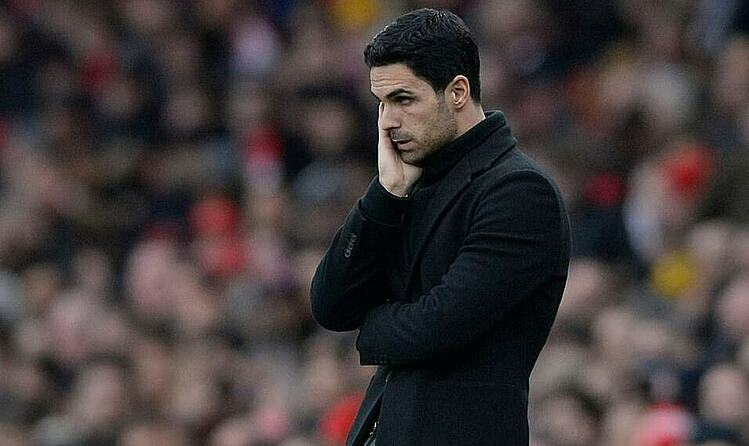
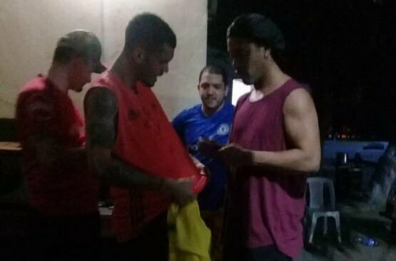
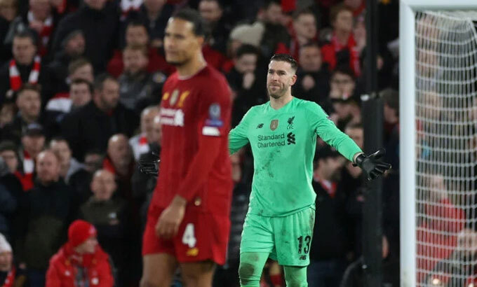
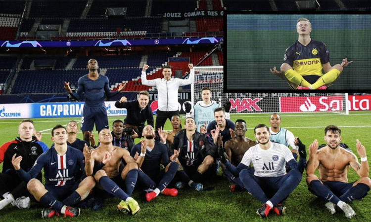

HLV của Arsenal nhiễm nCoV !
|  |
Mikel Arteta dương tính với nCoV, và có thể đã lây lan cho các thành viên trong đội một cũng như ban huấn luyện của Arsenal. |
Ronaldinho ký tặng bạn tù
|  |
Cựu cầu thủ hay nhất thế giới Ronaldinho bắt đầu chấp nhận đồ ăn và giao lưu với những tù nhân khác. |
CĐV Liverpool nguyền rủa thủ môn Adrian
|  |
Thủ môn Adrian phải hứng thịnh nộ sau khi mắc lỗi khiến Liverpool bị Atletico Madrid loại ở vòng 1/8 Champions League. |
Neymar khóc sau chiến thắng của PSG
|  |
Cầu thủ đắt giá nhất thế giới Neymar gục đầu khóc sau khi PSG vượt qua Borussia Dortmund để vào tứ kết Champions League tối 11/3. |
Josip Ilicic - người viết tình ca ở Atalanta

|
Song hành với hành trình lãng mạn đưa Atalanta vào tứ kết Champions League, Josip Ilicic cũng gây ấn tượng với câu chuyện về ý chí vươn lên. |